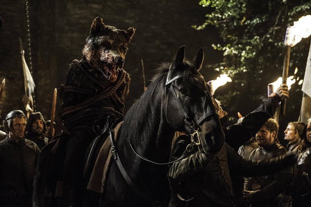

Robb Stark murió dos veces en la Boda Roja

La Boda Roja
La muerte de Robb Stark en la conocida como Boda Roja fue uno de los momentos más impactantes tanto en la serie Juego de Tronos como en la serie de novelas Canción de Hielo y Fuego. La Boda Roja difiere muy poco entre el papel y la pantalla, aunque sí que hay cambios importantes en cuanto a personajes importantes que obviaron en la serie.
Por ejemplo, en el libro Tormenta de Espadas, Catelyn Stark se araña su propia cara en un acto de gran dolor, lo cual determina su apariencia después de resucitar como Lady Corazón de Piedra. También, en la serie, la esposa de Robb también es asesinada durante la boda, mientras que en los libros no asiste a ella y se salva.
Últimas palabras
Las últimas palabras de Robb Stark antes de ser asesinado fueron “Viento Gris”, su lobo huargo, el cual fue posteriormete asesinado, antes de arrancar su cabeza y coserla al cuerpo de Robb. Estas últimas palabras se conectan con otra teoría ampliamente conocida y casi asegurada:
Jon Nieve está vivo en Fantasma
Con su habilidad de cambiapieles, Jon Nieve, antes de ser asesinado por sus compañeros de la Guardia de la Noche, se introdujo en la mente de su huargo, Fantasma, a la espera de que Melissandre lo resucite. Su última palabra fue “Fantasma”Problemas del punto de vista
Robb Stark nunca ha sido punto de vista en los libros, por lo que sus habilidades como cambiapieles no se han explorado como sí lo han hecho Bran, Jon o Arya (George R.R. Martin ha confirmado que todos los niños Stark tienen esa habilidad)
Varamyr Seispieles
En el prólogo de Danza de Dragones aparece un salvaje cambiapieles llamado Varamyr Seispieles, el cual habla de poder vivir una segunda vida dentro de una bestia, una vez que su cuerpo ha muerto, concretamente dentro de un lobo huargo.
Conclusión
Si un cambiapieles puede tener una segunda vida, entonces es bastante probable que Robb se introdujera en Viento Gris después de ser asesinado en la Boda Roja, para poco después volver a morir, haciendo de la Boda Roja un evento aún peor de lo que inicialmente fue.
Puedes saber más aquí: ScreeenRant: Game of Thrones Theory - Robb Stark Died TWICE At The Red Wedding